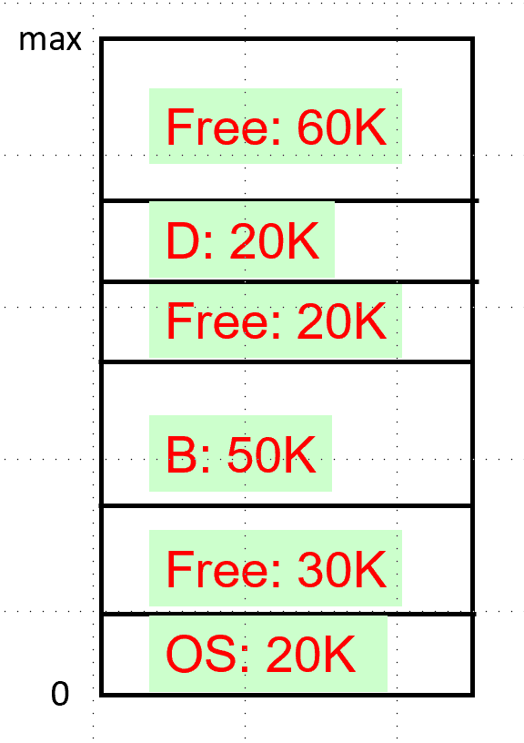
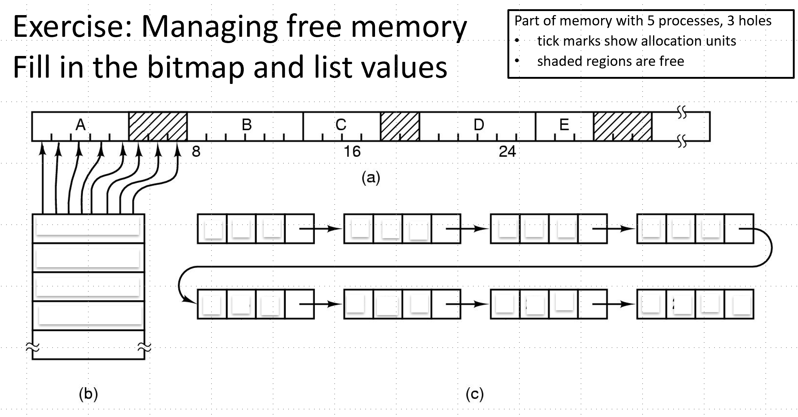
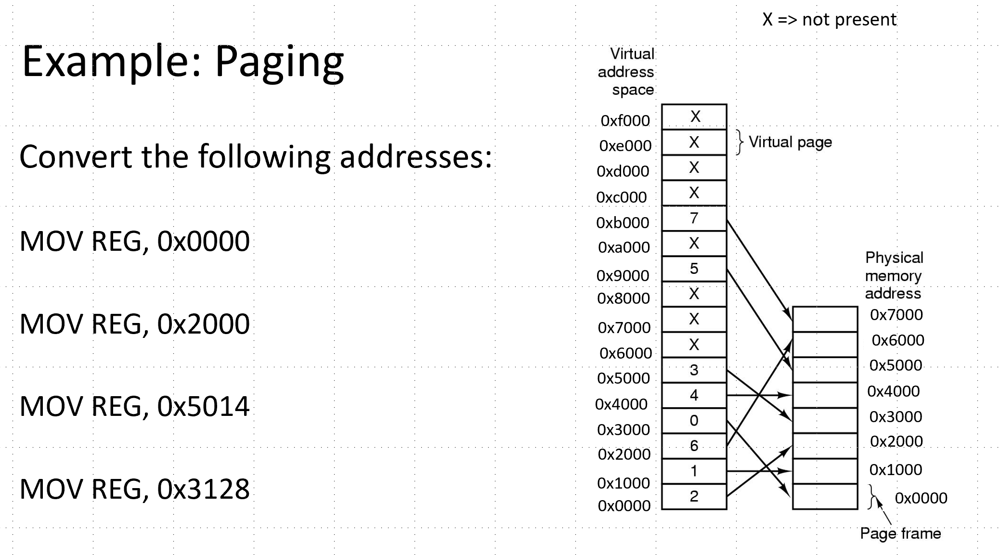
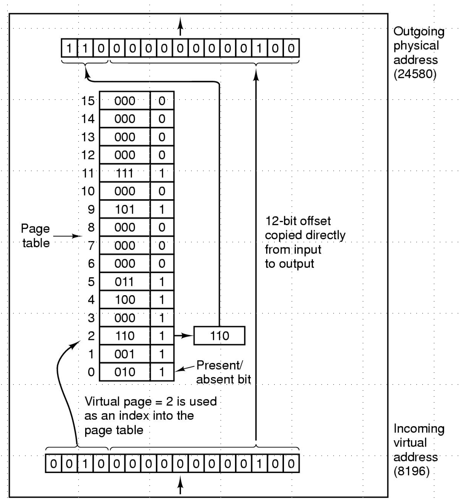

Study Guide: OS Exam II
Exams are closed book. You can bring one written cheat sheet. 90 minutes in class.
Topics:
-
Tanenbaum Chapters 3,4,5,9
-
Programming with pointer arithmetic; Working with binary files and formats.
-
Memory: Strategies for loading processes into memory, TLB, virtual memory, paging algorithms
-
Files: File system features, such as backups, consistency, and journaling. Methods for storing files/directories and managing free space (inodes, FAT tables, etc)
-
I/O: I/O software layers, drivers, disks, keyboard/mouse input, windows systems
-
Security: Terminology, buffer exploits, basic cryptography, malware, defenses
Tanenbaum
-
Chapter 3: 4, 5, 6, 7, 11, 15, 17, 20, 28, 30, 33, 36, 38, 47
-
Chapter 4: 20, 21, 24, 28, 30, 40, 41
-
Chapter 5: 5, 10, 13, 14, 16
-
Chapter 9: 1, 6, 7, 8, 9, 19, 28, 29, 38, 39, 40, 49, 50
Additional practice
Programming with pointers
-
For each of the following variables, say whether its a pointer or not
-
char buffer[128]; -
char* a = NULL; -
const char* message = "hello"; -
char a; -
struct mystery* m = malloc(sizeof(struct mystery)); -
struct mystery** m = malloc(sizeof(struct mystery*)*10); -
argv[0]where argv is a list of command line arguments passed to main
-
-
In the following code, indicate which casts from void* are safe.
#include <stdio.h>
int main()
{
void* generic = NULL;
int a = 3;
double b = 4.5;
generic = &a;
generic = &b;
printf("test %f\n", *generic);
double* double_ptr = (double *) generic;
printf("test %f\n", *double_ptr);
int* int_ptr = (int *) generic;
printf("test %d\n", *int_ptr);
generic = &a;
double* double_ptr = (double *) generic;
printf("test %f\n", *double_ptr);
int* int_ptr = (int *) generic;
printf("test %d\n", *int_ptr);
return 0;
}
-
Draw the stack for the following code.
int main()
{
char vals[3] = {'h','I','\0'};
char* valptr = vals;
char v1 = vals[2];
char* v1ptr = valptr + 2;
char v2 = *v1ptr;
printf("%c %c\n", v1, v2);
// Draw stack here
for (int i = 0; i < 3; i++) {
printf("%c\n", vals[i]);
}
for (char* ptr = vals; ptr < vals+3; ptr++) {
printf("%p %c\n", ptr, *ptr);
}
}
-
Draw the stack diagram for the following code
struct chunk {
int size;
struct chunk *next;
};
int main() {
int size = sizeof(int) * 5;
void *memory = malloc(size + sizeof(struct chunk));
if (memory == NULL) {
return 1;
}
struct chunk *cnk = (struct chunk*) memory;
cnk->size = size;
void* data = (void*) (cnk + 1);
int* array = (int*) data;
for (int i = 0; i < 5; i++) {
array[i] = i;
}
-
Suppose the address of x is 0x4c568000. For each of the following expressions, give the new address of x;
-
int* x = &a; x++; -
`char* x = &c; x-- *
-
struct m {
int q;
char buff[4];
};
struct m* x = &data;
x+=2;
-
Write code that reads in a binary file with the following specification:
-
The first 4 bytes is an integer that contains the size of the file
-
The second 16 bytes is a character field containing the Author
-
The next three values are unsigned integers that contain a month, day, and year
-
The remaining N bytes store textural data, terminated with the null character.
-
Memory
-
What is the memory hierarchy and how does it aid performance?
-
Name 3 types of secondary storage.
-
Name 3 types of primary storage.
-
How do primary storage and secondary storage differ in terms of their characteristics?
-
How does the OS abstract memory to processes? How do these abstractions aid users?
-
Name some advantages and disadvantages of a simple process memory model in which the entire process is loaded contiguously in memory?
-
What is virtual memory? How are virtual addresses mapped to physical addresses?
-
Suppose we are using a 10K blocksize. Give the bitmap that represents the free blocks in memory.
 -
Suppose we are using a 10K blocksize. Give the linked list that represents the free blocks in memory. Assume each node in the linked list contains the process ID, or H if it a hole, a start location, a size, and a pointer to the next record.
-
Fill in the following figure with the bitmap and linked list that corresponds to the given memory block.
 -
Suppose we have processes in memory as follows. Suppose a new process requests 15K, which hole should we use if we were using a strategy of best fit, worst fit, and first fit?
-
Suppose we are using bitmaps to manage free space for a 1 GB disk. How big must the bitmap be if we use 4 KB blocks? What about if we use 16 KB blocks? What is the disadvantage of using larger blocks?
-
Suppose we are using linked lists to manage free space for a 1 GB disk. How much additional space do we need if we use 4 KB blocks? What about if we use 16 KB blocks?
-
What is the memory mapping unit (MMU)?
-
What is a page? What is a page frame?
-
What is paging? What is a page fault?
-
Suppose we have the following specifications: 16-bit addresses, 32 KB of physical memory, and 4KB page sizes.
-
What is the possible range of virtual addresses?
-
How many pages do we have?
-
How many page frames do we have?
-
-
Compute physical addresses for the virtual addresses using the commands below.
 -
Suppose we have 4 KB pages 16-bit addresses. Also suppose our page table looks as follows. Convert the address 0x2004.
 -
What is the translation lookaside buffer? What is its purpose?
-
Suppose we have 32-bit addresses, 4 KB page sizes, and the a two-level page table. The first 10 bits are an index into the first page table. The next 10 bits are an index into the second page table. Compute the indices into the page tables and offset for the following addresses:
-
0x00403004
-
0x00c0500a
-
-
What is the advantage of multi-level page tables? What about inverted page tables?
-
What would the optimal page replacement algorithm be in a perfect world?
Files
-
What is a file?
-
What is a file system?
-
Give some examples of file attributes?
-
Give two different designs for storing file attributes in a file system.
-
Give two possible designs for managing free space within a file system.
-
How does the block size for files possibly affect fragmentation?
-
What is the root directory? the current working directory?
-
What is the difference between absolute and relative paths?
-
Give a possible file system design for a system that has a single-level directory system.
-
Explain how multiple users could be supported in a single-level file system.
-
-
What is a symbolic link?
-
Describe a possible file system design that supports symbolic links.
-
Describe the process of booting a computer.
-
What is the Master Boot Record (MBR)
-
What is a partition?
-
Define internal versus external fragmentation.
-
List 4 goals of file system design.
-
Consider the following set of files: A has 2 blocks. B has 5 blocks. C has 1 block. Assume they are stored on a system with 4 KB block sizes. Draw how we would store the files
-
using contiguous allocation
-
using linked lists having nodes stored with each block
-
using a file allocation table (FAT)
-
using inodes
-